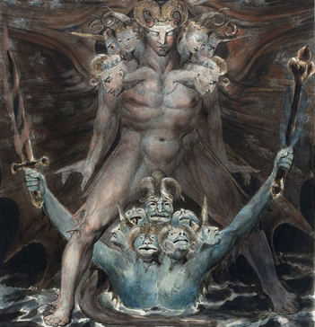

Charles D. Tarlton
Northampton, Massachusetts, USA
William Blake’s Great Red Dragon and the Beast from the Sea (1805)*

And there appeared another wonder in heaven; and behold a great red dragon, having seven heads and ten horns, and seven crowns upon his heads. *** And I stood upon the sand of the sea, and saw a beast rise up out of the sea, having seven heads and ten horns, and upon his horns ten crowns, and upon his heads the name of blasphemy.
Book of Revelations, 12.3, 13.1
The eye tries to see what is really here, two creatures with seven heads apiece and wonders where it has seen them before. Behind seven layers of gauze, in a suffocating dark that pours like crude oil, the monster comes for you in a dream, crawls after you clutching at your pants leg. You are here with the monster and you are at the same time somewhere else. You in the monster’s clutches and you tossing among the blankets are miraculously not the same. As the monster drags you toward his grotesque form, the dream-you is paralyzed, turned frantically mute, but you in the bed cries pitifully out, wakes your wife and she shakes you now, “Wake up!” she says. “You’re having a nightmare.”
John of Patmos wrote
the Book of Revelations
when the world was small
and the number of people
small enough that God might come
and live amongst them
and the smell of their burning
enemies dispersed
so the horrors of God’s wrath
might be thought to fade away
we lay in the dark
awake my brother and I
telling ghost stories
making up monsters one traitv
at a time, the worst we could think
John of Patmos dreamt distorted beasts with seven heads and ten horns and other rampaging freaks and monsters and floods and fire visited upon the world for its sins and fornications. What burns and starves us now will turn to gold and cool in the sea in time. Bad will become good, grief turn to joy, and the meek shall inherit the earth. The Christians endure their suffering and wait for the destruction of their tormentors—“How long, O Lord, how long?”
the long deception
of churches and their speakers
makes us imagine
with tall tales over-worded
monsters coming in the night
For seeing Beelzebub is Prince of Phantasmes, Inhabitants of his Dominion of Air and Darknesse, the Children of Darknesse, and these Daemons, Phantasmes, or Spirits of Illusion, signifie allegorically the same thing. This considered, the Kingdome of Darknesse, as it is set forth in these, and other places of the Scripture, is nothing else but a "Confederacy of Deceivers….”
- Thomas Hobbes
pictures of his dread
painted for a printed version
of Revelation
nothing to us now. Cartoons
meant for frightening children
fourteen silly heads
and a scary giant with wings
over a monster
coming out of the water
Oh, please….
Note: The Blake Image is from the National Gallery of Art, pen and ink with watercolor over graphite (15 13/16 x 14 in.).
|